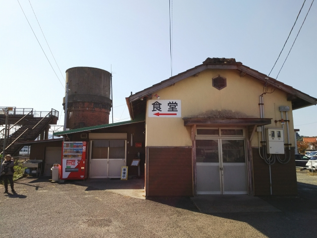

高松は何度も行ってるのに、また迷いまくってしまいました・・・
岡山で乗った列車が悪かったのか、なぜか瀬戸大橋を渡ったら西のほうに向かっ
て行くので、あわてて降りました。
多度津か・・・
駅前を散歩してみると、８６００が保存されてた。
多度津は工場もあって、四国の鉄道の重要拠点ですね。
８６００といえば、博多に単身赴任している尼出身のＳＥが、鬼滅コラボのＳＬ列
車撮影で歩道をふさぐ撮り鉄にキレたとかキレんかったとか・・・

食堂があるみたいなので、昼食べよか。
今日はカレーだけかいな。
実は、ここ、全国でここだけとなった構内食堂です。
一般の人も利用可能ですが、ほとんどの客はＪＲ職員です。
さてと、移動しますか。
ちょうど本州からの貨物列車が来ましたが、もう牽引車は新しい機関車なんやね。
あれ、また高松と反対方向に向かってたみたい。
ここは・・・琴平か。
アンパンマン特急が来たわ。これに乗ろっと。
ひ、ひえ～！。
もっと高知寄りに来てもうた。降りんと。
降りたものの、次の列車までは時間があるの～。
おっ、バスが来た。乗ってみよっと。
これは噂に聞く、祖谷渓を進んでるみたいやな。平家の落ち武者が隠れたと言われてるけど、ここに隠れられたら、見つけるのは難しいなぁ。
こんな深い谷とは思わんかった。
おっ、行ってみたかった祖谷温泉やん。こりゃはいっとかな。
少し歩いていくと、名物の小便小僧像が。
ここから立ちションする根性はないなぁ。
温泉は谷底にあるので、ケーブルカーがあります。
こんな構造です。
温泉は、ぬる湯でちょっと寒いぐらいで、夏ならサイコーな温泉です。
温泉はこんな感じ
ええ湯でしした。はよ高松に向かわな。
大歩危駅に着いたのはもう夕暮れ。
結局、来た列車乗っていくと、徳島にたどり着き、徳島に泊まるはめに。
徳島に来たなら、行ってみたいところがありまして・・・
駅前からバスにのって、米津団地前に。米津玄師と関係あるんかな？
来る途中にジャストシステムの本社ビルがあったけど、最近どないなってんのやろ。
こっちやこっちや。
ここが長原渡船の乗り場です。
船は向かい側にとまってて、こっちで立っててもなかなか気づいてくれず、
このまま気づいてくれんかったらどないしょと気を揉みましたが、なんとか
気付いてくれました。
来た来た。
当然、乗るのは私一人。
すぐ対岸に着きます。
長原側。
バスで徳島駅に戻ります。
ようやく高松に行ける。
うずしおは、失敗作と言われている２６００形。
志度駅でことでんに乗換え。
ことでん志度駅。
ことでんに乗って、無事ユーザにたどり着けました。
仕事を終えて、戻ろうと思ったら、また乗り間違え！！
新居浜まで行ってもうたので、オレンジフェリーで帰ることに。
オール個室の新造船でした。快適快適！
ちゃんと船内レストランもあって、鯛のあら煮を食べました。
ほな、寝ますわ。
無事、南港に到着。
次こそ、迷わんようにせな・・・